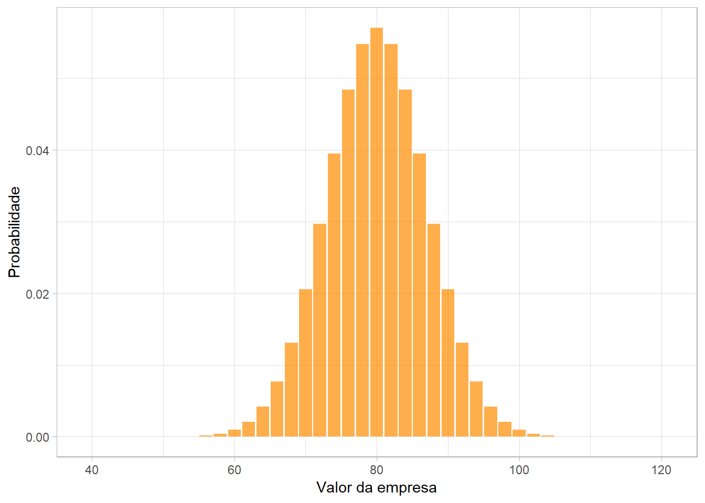

[artigo_1] (https://repositorio.comillas.edu/rest/bitstreams/37921/retrieve) >> o processo geral de execução do valuation pelo fluxo de caixa descontado se resume em alguns passos: calcular o fluxo de caixa operacional, calcular a taxa de desconto, calcular o valor residual e calcular o valor da empresa.
A condução de uma empresa demanda conhecimentos diversos dos gestores que a administram, sendo que uma destas áreas de conhecimento é a de finanças empresarial, que lida com a gestão dos ativos da empresa, buscando tornar e manter a companhia rentável ao longo do seu período de existência, maximizando seu valor (DAMODARAN, 2012). Dentro do ambiente de finanças empresarial, há a atividade de avaliação de empresas, que assumiu grande importância nos últimos anos, visto que mensurar o valor de uma empresa passou a ser fundamental na condução de uma organização e também por conta de que essa atividade auxilia investidores na tomada de decisão (MONTE; NETO; RÊGO, 2009). Segundo Koller, Goedhard e Wessels (2010), a valoração de empresas ou valuation, é a atividade que busca encontrar o real valor de ativos através de técnicas projetivas.
A ideia de valor é um conceito chave para entender a essência do valuation. Damodaram (2012) afirma que o valor de um ativo não é justificado pelo fato de que há investidores comprando-o ao preço oferecido no mercado, mas sim por conta de variáveis reais que reflitam o fluxo de caixa futuro que este ativo irá gerar. O estudo destas variáveis reais se denomina análise fundamentalista de empresas e é amplamente aplicada no mercado financeiro. O objetivo da análise fundamentalista é analisar os fundamentos econômicos-financeiros de um determinado ativo, utilizando como insumo demonstrativos financeiros, dados do cenário econômico em que a empresa em questão atua e também dados qualitativos, como quadro de diretores, estratégia adotada e vantagem competitiva que o negócio possui. Todas estas variáveis serão usadas para embasar projeções sobre o resultado financeiro que este ativo pode gerar.
Na base da criação do valor, existe a aplicação de capital adquirido de investidores em ativos com potencial para gerar fluxos de retornos que serão suficientes para remunerar os investidores que realizaram a alocaçaõ deste capital (KOLLER; GOEDHART; WESSELS, 2010). Sendo assim, empreas ao longo de sua existência, criam e destroem valor, com base em suas decisões de investimento, tendo a atividade de valuation como principal ferramenta para mensurar se está ocorrendo criação ou destruição de valor. Porter (1998) indica que há 5 forças que direcionam a criação de valor de uma companhia, tornando-a competitiva em certos períodos e minando esta competitividade em outros momentos. Estas 5 forças irão afetar custos, preços, estratégias de investimentos e consequentemente a lucratividade do setor como um todo. Desta forma o valuation se torna uma rotina frequente de gestores e investidores para terem ciência do impacto de decisões operacionais, táticas e estratégicas no valor do negócio.
Para se realizar o valuation corretamente, o analista precisa ter ciência de 3 conceitos chave (VIEBIG; PODDIG; VARMAZ, 2008):
Economias de escala: Quando o crescimento na receita gera reduções no custo médio unitário, por conta de reduções com custo de pessoal, curva de aprendizado ou maior eficiência no uso da tecnologia.
Ciclos de negócios: Expansão ou contração do crédito na economia, nível de estoque no setor, nível de consumo ou endividamento, entendimento do ciclo do setor em que a empresa avaliada opera.
Ciclo de vida competitivo: Estágios em que a empresa percorre ao longo de sua existência, sendo basicamente três estágios. O primeiro se dá quando a empresa é nova e requer altos investimentos, onde a alocação de capital é superior a depreciação. No estágio dois, a empresa gera altos retornos sobre o capital investido e competidores começam a entrar no setor, imitando a empresa pioneira. O terceiro estágio ocorre quando a competição reduz o lucro econômico do setor, afetando o valor das empresas que atuam neste mercado e fazendo com que empresas deixem o setor.
O desenvolvimento de um modelo de valuation pode ser feito de diversas maneiras. Damodaran (2012) indica que não há a um método mais correto, porém o analista deve buscar construir um modelo simples, que seja fácil de ser compreendido e ajustado caso necessário. Viebig, Poddig e Varmaz (2008) indicam que um bom modelo de valuation deve ser simples e ajudar investidores a fazerem decisões corretas. Dentre as metodologias existentes para realização desta atividade, Muller e Teló (2003) mencionam os seguintes modelos:
1.Modelos baseados no Balanço Patrimonial: Calculam o valor de um negócio baseado no valor de seus ativos 2.Modelos baseados na demonstração do resultado: Determinam o valor de uma empresa através de indicadores encontrados no demonstrativo de resultado da empresa, como por exemplo lucros e receitas 3.Modelos baseados no fluxo de caixa: Se baseiam em estimativas de fluxo de caixa que serão gerados no futuro pela empresa avaliada.
Dentre os grupos de modelos indicados os autores indicam que os métodos baseados no Fluxo de Caixa Descontado são os mais aceitos por analistas e investidores. Viebig, Poddig e Varmaz (2008) confirmam que a técnica mais aceita no setor é a do Fluxo de Caixa Descontado, por sua simplicidade de execução e entendimento. Nesta mesma direção, Assaf Neto (2012) corrobora a superioridade do método do Fluxo de Caixa Descontado para execução do valuation, indicando que esta metodologia consegue expressar melhor o potencial da empresa em gerar valor no futuro.
De forma resumida, (https://repositorio.comillas.edu/rest/bitstreams/37921/retrieve) indica que a construção do modelo de valuation passa por quatro etapas. A primeira é o cálculo do fluxo de caixa operacional, seguindo pelo segundo passo que é definir a taxa apropriada para descontar estes fluxos de caixa que serão projetados para um determinado período de tempo (e.g. 10 anos). Na sequência há o cálculo do valor residual, que será o valor gerado pela empresa após o período de projeção do fluxo de caixa e então, por último, ocorre o cálculo do valor da empresa, sendo a soma de todos os fluxos de caixa descontados pela taxa de desconto mais o valor residual. Tendo o valor da empresa calculado, basta dividí-lo pelo número de ações disponíveis no mercado acionário para se ter um preço por ação do modelo, sendo este valor uma valiosa informação para tomada de decisão.
Apesar de sua ampla aplicação, o valuation pelo Fluxo de Caixa Descontado possui limitações que são inerentes aos métodos projetivos. Pelo fato de que esta metodologia realiza projeções do fluxo de caixa da empresa, para depois descontar estes valores por uma taxa que represente o risco deste negócio, as projeções podem não representar o valor efetivado no futuro, por conta de mudanças não previstas em variáveis chave que compõem o fluxo de caixa, como por exemplo receitas, custos e despesas. Desta forma, a principal limitação do valuation pelo Fluxo de Caixa Descontado se encontra em seu embasamento determinístico das projeções, onde na realidade os fluxos de caixa, quando projetados, possuem riscos que precisam ser inseridos no modelo.
Visando corrigir esta limitação, convencionou-se utilizar métodos de simulação, onde um destes métodos é o de Simualação Monte Carlo. Com a aplicação da Simulação Monte Carlo o valuation recebe cenários probabilísticos e desta forma não gera apenas um resultado final com o valor da empresa, mas muitos cenários a depender do número de iterações indicado pelo criados do modelo. A Simulação Monte Carlo é um método de geração de números aleatórios que foi desenvolvido por volta de 1940 por Von Neumann e Ulam (MALETTA, 2005), onde sua aplicação inicial foi na resolução de problemas matemáticos complexos cuja resolução exata não era viável. Mais precisamente, a aplicação foi na atividade de fusão nuclear na segunda guerra mundial.
As oportunidades de aplicação da Simulação Monte Carlo em outras áreas são diversas, porém na maioria das vezes a aplicação depende do estabelecimento de distribuições de probabilidade (e.g. Normal, Binomial, Triangular, etc) para fundamentar a geração de números aleatórios. No campo dsa finanças, especificamente na atividade de valuation, a tentativa inicial foi por volta de 1980 e desde então as duas técnicas foram cada vez mais usadas em conjunto, por apresentarem resultados mais robustos do que o modelo de valuation determinístico.
Para aplicação da Simulação Monte Carlo no valuation pelo Fluxo de Caixa Descontado, o analista deve seguir alguns passos básicos que permitirão tornar o processo escalável para várias empresas a serem analisadas. Primeiro se deve identificar as variáveis chave que formam o Fluxo de Caixa Operacional (FCO) da empresa analisada. Nesta etapa não há uma regra única para classificação das variáveis, pois diferentes empresas podem ter diferentes variáveis cruciais para geração do fluxo de caixa. A ideia é que as variáveis chave tenham o comportamento classificado como estocástico ao invés de determinístico. Na sequência, é preciso analisar o histórico das variáveis classificadas como estocásticas, podendo ser os últimos 5 ou 10 anos, com o objetivo de identificar a distribuição de probabilidade que estas variáveis possuem. Se caso nenhuma ditribuição se encaixar, após usar os devidos testes (e.g. histogramas, teste de Qui-quadrado ou Kolmogorov-Smirnov), pode-se utilizar a distribuição triangular para a variável. Na sequência, será necessário verificar se as variáveis chave do FCO possuem correlação serial ou correlação entre si. Esta validação poderá ser auxiliada por testes estatísticos de regressão linear, onde caberá ao criador do modelo a definição de um limite para o valor do coeficiente de determinação (R²), para que, acima deste limite, a geração de números aleatórios considere a correlação das variáveis e abaixo do limite não leve isso em consideração.
Tendo realizado estas etapas preliminares, o analista poderá desenvolver um algoritmo de Simualação Monte Carlo que irá utilizar estas informações para gerar números aleatórios para cada variável classificadas como estocástica. O algoritmo irá gerar n números aleatórios, onde n é o período de tempo que será feita a projeção do fluxo de caixa (e.g. 5 ou 10 anos). Para cada período em n, será calculado um fluxo de caixa a ser descontado pela taxa de desconto definida, para trazer o fluxo de caixa ao valor presente e após ter todos os fluxos de caixa a valores presentes e somados junto ao valor residual (VR), será gerado o valor da empresa para a primeira iteração. Ao repetir esta iteração durante k vezes, dividindo o valor resultante pelo número de ações, será possível gerar um gráficos com os possíveis valores da ação da empresa. O gráfico gerado será semelhante à uma distribuição normal, com média e desvio padrão estabelecidos, conforme ilustração abaixo:

O desenvolvimento do algoritmo será feito com a utilização do Software Estatístico R, que irá executar os seguintes passos:
Tendo sido definido os passos do algoritmo, os conceitos do valuation pelo Fluxo De Caixa Descontado e os conceitos da Simulação Monte Carlo, se torna possível delinear os objetivos do presente projeto, que de maneira resumida será desenvolver um algoritmo que, após receber dados financeiros de entrada, fará o cálculo do valuation pelo método do Fluxo de Caixa Descontado com utilização da Simulação Monte Carlo, gerando uma distribuição de probabilidade do valor da ação da empresa escolhida para ser comparado ao valor atual. Para este propósito, serão definidas algumas empresas para aplicação do algoritmo e o resultado final será comparado com o valor atual da ação, para que seja possível averiguar se o algoritmo está gerando resultados satisfatórios e realistas.
De maneira mais detalhada, o objetivo específico do trabalho será:
Coletar dados financeiros (balanço patrimonial e demonstrativos de resultado de exercício) de empresas de capital aberto.
Determinar a taxa de desconto aplicável às empresas escolhidas.
Identificar variáveis chave do fluxo de caixa.
Criar um algoritmo em R para executar os passos descritos anteriormente.
Comparar o resultado obtido com o resultado atual da ação das empresas escolhidas.
A metodologia do Fluxo de Caixa Descontado possui diversas formas de ser aplicada, porém o resultado final será o mesmo se a aplicação do modelo for correta (VIEBIG; PODDIG; VARMAZ, 2008). Nessa técnica, o objetivo será encontrar o valor intrínseco de um ativo se baseando em expectativas de rendimentos futuros, tendo como premissa a ideia de que o valor de um ativo é a soma dos fluxos de caixa futuros gerados por este ativo, descontado por uma taxa que represente o risco deste investimento. Este técnica se mostra superior às outras técnicas disponíveis, por sua simplicidade de elaboração e por seu embasamento no fluxo de caixa, que é uma variável fundamental que indica se a empresa está criando ou destruindo valor em um determinado período.
A fórmula básica para o cálculo do valuation é descrita abaixo:
\[ EV=\sum_{t=1}^n\frac{FCO_t}{(1+r)^t} + \frac{FCO_2}{(1+r)^2} ... \frac{FCO_n}{(1+r)^n} + VR \]
Onde:
\(EV\) = Valor da empresa
\(FCO\) = Fluxo de Caixa Operacional
\(r\) = Taxa de desconto que representa o risco da empresa
\(VR\) = Valor residual
\(t\) = Período da projeção
Segundo Viebig, Poddig e Varmaz (2008) o período de tempo em que se realiza a projeção é chamado de período competitivo da empresa e geralmente se utilizam 10 anos para projetar os fluxos de caixa. Após este período, o valor gerado pela empresa é chamado de Valor Residual e seu cálculo é feito de acordo com a fórmula abaixo (artigo (https://repositorio.comillas.edu/rest/bitstreams/37921/retrieve).
\[VR=\frac{FCO}{(r-g)}\] Onde:
\(FCO\) = Fluxo de Caixa Operacional.
\(r\) = Taxa de desconto que representa o risco da empresa.
\(g\) = Taxa de crescimento da empresa.
Quando se menciona o fluxo de caixa para a atividade de valuation, não indica-se o fluxo de caixa que ocorre entre pagamentos e recebimentos da empresa em um determinado período, indicado no Demonstrativo de Fluxo de Caixa nas publicações para investidores. O fluxo de caixa para aplicação do modelo é o Fluxo de Caixa Operacional, obtido através de transformações no Demonstrativo de Resultados da Empresa (DRE) e do Balanço Patrimonial (BP).
Este fluxo de caixa indica os valores monetários gerados pelas operações da empresa, após o desconto de quantias gastas em investimentos e impostos e antes do pagamento de juros sobre a dívida (Damodaran, 2012). Após obter os relatórios financeiros da empresa, será necessário ajustá-lo para se conseguir calcular o Fluxo de Caixa Operacional, pois estes demonstrativos misturam performance operacional com performance financeira, sendo que o valuation é fundamentado apenas pela performance operacional da empresa. De acordo com Bruni (2010) o Fluxo de Caixa Operacional pode ser expresso como a diferença entre entradas e saídas operacionais de caixa, que representa o lucro operacional, líquido de impostos e investimentos e com a adição da depreciação e amortização. Sabendo disso, é possível conceber o Fluxo de Caixa Operacional através da seguinte equação:
\[FCO = EBITDA(1-t) - CI\]
Onde:
EBITDA = Lucro antes de juros, impostos, depreciação e amortização.
CI (Capital Investido) = Investimentos realizados no período.
t = Taxa de Imposto de Renda (IR) e Constribuição Social sobre Lucro Líquido (CSLL).
Assaf Neto (2012) indica que a obtenção do EBITDA pode ser feita através dos demonstrativos financeiros que a empresa publica. A utilização de lucros antes de juros, depreciação e amortização ocorre por conta de que, na questão de juros, a ideia é que o valor da empresa não deve depender de como os fundadores adquiriram capital para criar o negócio. Por outro lado, na questão da depreciação e amortização, estes são valores provisionados, que não serão gastos no exercício avaliado, por isso não devem impactar na valoração do negócio.
A redução do imposto de renda ocorre por conta de que este valor não ficará com os investidores, por isso o valor da empresa deve refletir esta redução. O valor resultante deverá também estar líquido de investimentos, visto que este é um gasto que sai do caixa da empresa, portanto reduz o valor no presente para garantir rendimentos futuros, desta forma afeta o valuation.
Após realizar o cálculo do Fluxo de Caixa Operacional, será necessário estabelecer a taxa de desconto deste fluxo de caixa, que representará o risco deste investimento e o custo de oportunidade dos acionistas da empresa. Para o Fluxo de Caixa Livre para a empresa, a taxa utilizada será obtida pelo custo médio ponderado do capital, mais conhecido como Weight Average Cost of Capital (WACC) e para o Fluxo de Caixa Livre para o acionista a taxa de desconto é o custo do capital próprio, obtido pela metodologia Capital Asset Pricing Model (CAPM). O presente trabalho utilizará o Fluxo de Caixa Livre para a empresa como Fluxo de Caixa Operacional, por isso será realizado o cálculo da taxa WACC.
No modelo de valuation pelo Fluxo de Caixa Descontado, o cálculo da taxa de desconto é a parte mais complexa, visto que este cálculo envolve estimativas de riscos que não podem ser encontradas com exatidão (Damodaran, 2012). Segundo artigo, o método WACC para desconto de fluxos de caixa é a metodologia mais utilizada na área de finanças coportativas. e esta taxa representa o custo de oportunidade para investidores que direcionam capital para a companhia. Esta taxa deverá incluir o retorno demandado para cada tipo de investidor (i.e. acionistas e credores).
Para se calcular o WACC é necessário estimar os três componentes desta taxa, sendo eles o custo do capital próprio, o custo da dívida após impostos e a estrutura da companhia em termos de proporção entre dívida de credores e capital próprio. Dado que nenhum componente é acessível de maneira direta (por meio de demonstrativos financeiros ou informações de mercado), sua estimativa é baseada em modelos, premissas e aproximações (KOLLER; GOEDHART; WESSELS, 2010). A fórmula do WACC é representada abaixo:
\[WACC = \frac{D}{D+E}[K_d(1-T_m)]+\frac{E}{D+E}(K_e)\] Onde:
\(WACC\) = Weight Average Cost of Capital
\(K_d\) = Custo da dívida.
\(\frac{D}{D+E}\) = Proporção de débito sobre o valor da empresa.
\(\frac{E}{D+E}\) = Proporção do patrimônio dos acionistas sobre o valor da empresa.
\(K_e\) = Custo do capital próprio.
\(T_m\) = Imposto de renda.
De acordo com artigo, custo da dívida pode ser calculado com base nos gastos com juros indicados nos demonstrativos financeiros da empresa, mais precisamente a linha despesas financeiras, onde esta linha deverá ser divida pela conta Empréstimos observada no Balanço Patrimonial para assim obter um percentual que representará a taxa de juros paga pela empresa, visto que os juros pagos são decorrentes dos empréstimos relaizados.
Para o indicador de estrutura de capital, que informará a proporção de débito e patrimônio dos acionistas sobre o valor da empresa, o analista deve recorrer ao Balanço Patrimonial. Neste demonstrativo será possível obter os valores de Capital Social, Passivo Circulante e Passivo Não Circulante, que permitem o cálculo da estrutura de capital de acordo com as fórmulas:
\[\frac{D}{D+E} = \frac{PC+PNC}{PC+PNC+CS} \] \[\frac{E}{D+E} = 1-\frac{PC+PNC}{PC+PNC+CS} \] Onde:
\(PC\) = Passivo Circulante
\(PNC\) = Passivo Não Circulante
\(CS\) = Capital Social
Já o custo do capital próprio é calculado através do modelo CAPM, recomendando em artigo, que irá indicar, através de estimativas de riscos, qual o retorno necessário para os acionistas da empresa. A fórmula do modelo CAPM é definida abaixo:
\[K_e = R_f+\beta(R_m - R_f)\] Onde:
\(K_e\) = Custo do capital próprio
\(R_f\) = Retorno de investimentos de baixo risco (risk free).
\(R_m\) = Retorno do mercado.
\(R_m - R_f\) = Diferença entre a taxa de retorno do mercado e a taxa de retorno de investimentos livre de riscos.
\(\beta\) = Beta da empresa.
Seguindo os conceitos de [artigo]((http://www.fazenda.gov.br/centrais-de-conteudos/publicacoes/guias-e-manuais/metodologia-de-calculo-do-wacc2018.pdf), para o retorno de títulos com baixo risco \(R_f\) pode-se utilizar a taxa Selic, visto que esta taxa é usada nos títulos públicos que são os de menor risco no Brasil. O retorno de mercado pode ser obtido através da taxa de rendimento obtida no mercado acionário, sendo neste caso uma boa alternativa o índice Bovespa
Geralmente, para a variável \(R_f\), se utiliza a taxa Selic anual ou títulos do tesouro americano, que possuem risco próximo de zero. Para o retorno do mercado, é válido utilizar uma média do mercado de ações, como Índice Bovespa. O Beta da empresa indicará o quão sensível é a ação da empresa com relação ao mercado acionário, sendo que esta sensibilidade possui relação direta com o custo do capital próprio, pois é uma medida de risco.
Importante salientar que o risco será uma variável sempre presente na atividade de investimento e consequentemente na avaliação de empresas, visto que há uma relação forte e direta entre risco e retorno sobre o investimento (DAMODARAN, 2012). Para o mesmo autor o risco é definido como a probabilidade de receber um retorno sobre um investimento diferente do que se esperava, desta forma, o risco não é inerentemente algo negativo, pois há casos em que o risco, ao se materializar, gera ganhos superiores ao esperado. Após obter os dados para as variáveis de cada equação, será possível desenvolver o modelo de valuation pelo Fluxo de Caixa Descontado utilizando a fórmula indicada anteriormente. Conforme mencionado, ao se calcular o valor da empresa apenas com estas equações, será gerado um valor determinísticos para a empresa, visto que nenhuma variável apresentará comportamento estocástico, pois o Fluxo de Caixa Operacional será obtido através de uma média dos últimos anos, bem como a taxa de desconto será estática e também a taxa de crescimento para o valor residual. Desta forma, este modelo precisa ser aprimorado com a utilização da Simulação Monte Carlo.
Buratto (2005) indica que a Simulação Monte Carlo é um processo de amostragem com o objetivo de resolver problemas que envolvem variáveis estocásticas. Já para Lar e Kelton (2000), a Simulação Monte Carlo é uma técnica estatística de geração de números aleatórios a partir de uma dada distribuição de probabilidade indicada para resolução de problemas estocásticos. A técnica de Simulação Monte Carlo foi criada na década de 40 do século XX por Von Neumann e Ulam (MALETTA, 2005), que a utilizaram para resolver problemas matemáticos cuja resolução determinística não se mostrava viável. A aplicação ocorreu primeiramente no tratamento de fusão nuclear, sendo depois expandida para auxiliar na resolução de problemas em física e química. O nome Monte Carlo advém do fato que a capital de Mônaco se chama Monte Carlo e é reconhecida por seus cassinos, que possuem o jogo da roleta, onde esta tem como característica a aleatoriedade, similar a técnica de simulação Monte Carlo.
A Simulação Monte Carlo começou a ganhar adeptos que aplicaram-a na resolução de problemas dos mais diversos tipos. Isto se deu por conta do aumento da capacidade de processamento de dados dos computadores, que viabilizou simulações mais complexas com um número de iterações cada vez mais alto. Na base da técnica de Simulação Monte Carlo há a geração de números aleatórios, que é feita na maioria das vezes por um computador que reproduz números pseudo-aleatórios, visto que computadores não conseguem gerar sequências puramente aleatórias (BURATTO, 2005). Esta geração de números pseudo-aleatórios deve ser feita levando-se em conta uma determinada distribuição de probabilidade, para que a amostra seja aplicada na resolução de problemas reais (GENTLE, 2002). Ademais, caso o modelo contenha mais de uma variável que assumirá comportamento aleatório, é necessário determinar, antes da geração das sequências aleatórias, se há correlação entre as variáveis do modelo.
A definição da distribuição de probabilidade das variáveis do modelo pode ser feita de diversas formas. Uma delas é através de gráficos, como o histograma ou gráfico quantil-quantil, que deixam para o autor do modelo a definição de qual distribuição mais se adequa à variável analisada. Outra forma são os índices de inclinação e curtose, usados para testes de normalidade da variável e há também testes formais de aderência à distribuição de probabilidades, como por exemplo o teste de Shapiro-Wilk, Kolmogorov-Smirnov ou Anderson-Darling (artigo http://www.de.ufpb.br/~ulisses/disciplinas/normality_tests_comparison.pdf) e (http://www2.psychology.uiowa.edu/faculty/mordkoff/GradStats/part%201/I.07%20normal.pdf).
No presente projeto distribuição normal será sempre preferível, visto que esta premissa facilita na construção do modelo e geração de conclusões finais. Em estatística paramétrica, é necessário assumir uma determinada distribuição de probabilidade dos dados e usualmente se opta pela distribuição normal. Quando a premissa de normalidade é violada, a interpretação e inferência dos dados não será confiável ou até mesmo será incorreta (artigo http://www.de.ufpb.br/~ulisses/disciplinas/normality_tests_comparison.pdf). O autor (file:///C:/Users/francisco.piccolo/Downloads/A_Brief_Review_of_Tests_for_Normality.pdf) indica a mesma afirmação sobre a importância da normalidade dos dados, afirmando que o ferramental estatístico muitas vezes se fundamenta na normalidade dos dados e se esta premissa não é válida, a inferência fica corrompida. O artigo (file:///C:/Users/francisco.piccolo/Downloads/A_Brief_Review_of_Tests_for_Normality.pdf) corrobora esta afirmação, indicando que a violação da normalidade dos dados pode gerar estimadores incorretos e por consequência, invalidar as conclusões e inferências geradas pelo analista.
No presente trabalho, a atribuição da distribuição de probabilidade para as variáveis classificadas como estocásticas se dará da seguinte forma. Primeiro, será verificado se a variável se encaixa na distribuição normal através da análise gráfica e, caso não se encaixe, será usada a distribuição triangular, definindo-se o valor máximo, mínimo e mais provável, necessário para utilizar esta distribuição. Segundo o autor (http://www.de.ufpb.br/~ulisses/disciplinas/normality_tests_comparison.pdf), a distribuição triangular é recomendada quando a variável não se encaixa em uma distribuição conhecida ou quando não há dados históricos que possibilitem inferir uma distribuição adequada.
Dando continuidade, a Simulação Monte Carlo começou a ganhar mais adeptos que a utilizaram para resolver problemas dos mais diversos tipos. Na área de finanças, especificamente para avaliação de empresas pelo fluxo de caixa descontado, a Simulação Monte Carlo obteve grande aceitação, visto que corrige uma limitação latente da técnica, que é a de não incluir incertezas nos dados de entrada do fluxo de caixa. A aplicação da técnica na atividade de valuation ocorreu por volta de 1980, através de uma publicação da empresa de consultoria McKisney e David Hertz, que mostraram sua aplicação na projeção do fluxo de caixa de uma empresa (SHARMA; PEACOCK, 2008). A combinação das duas técnicas passa pela identificação das principais variáveis que formam o fluxo de caixa operacional da empresa e de suas respectivas curvas de distribuição de probabilidade. Após isso é possível criar um modelo que terá como variável de entrada não apenas um único valor, mas uma grande quantidade de valores que serão gerados aleatoriamente pela técnica de Monte Carlo com base na respectiva distribuição de probabilidade indicada.
Na literatura foi possível identificar diversos autores que realizaram a combinação das duas técnicas, adaptando-as para cada cenário encontrado. Classen (2017) realizou a combinação da Simulação Monte Carlo com o método do Fluxo de Caixa Descontado para gerar a curva de distribuição de probabilidade do valor de uma empresa, visando apoiar o processo decisório de fundos de Venture Capital. As variáveis indicadas como estocásticas deste modelo foram receita líquida, custos de matéria prima, custos com pessoal, despesas administrativas e despesas com vendas, suas distribuições de probabilidade foram determinadas como triangulares, devido à falta de informações históricas para testar qual distribuição se encaixaria melhor para as variáveis. Já Buratto (2005) utilizou a técnica da Simulação Monte Carlo para estimar a probabilidade de empresas tomadoras de crédito não pagarem a dívida assumida. A principal variável estocástica inserida no modelo foi a receita bruta, que também foi definida como tendo uma distribuição triangular. Neste trabalho houve os testes Kolmogorov-Smirnov, Qui-quadrado e Anderson-Darling, que não apresentaram resultados que permitissem enquadrar as variáveis de entrada do valuation em uma determinada distribuição de probabilidade existente.
Por outro lado Oliveira (2012) realiza a aplicação do valuation com uso da Simulação Monte Carlo na análise da empresa Copasa S.A, uma empresa de abastecimento de água e esgoto. O autor utilizou o método do Fluxo de Caixa Descontado, analisando inicialmente o histórico financeiro da empresa para definição das variáveis chave do modelo, sendo que as variáveis chave definidas foram: população da área atendida, nível de cobertura de água e esgoto, volume médio de consumo e tarifas do serviço. Para as variáveis escolhidas foram realizados testes de aderência a distribuições de probabilidades, usando os testes kolmogorov-smirnoff , Qui-quadrado e Anderson-Darling. Após isso, foram realizados testes de correlação entre as variáveis para inclusão desta premissa no algoritmo de Simulação Monte Carlo. Ao final, foram geradas 10.000 simulações onde o resultado de cada iteração era o preço estimado da ação da empresa que, ao ser consolidado, resultou em uma curva de distribuição de probabilidades do preço da ação, com média e desvio padrão definidos.
Após entender a sistemática por traz do modelo de valuation pelo Fluxo de Caixa Descontado e da Simulação Monte Carlo, se torna possível realizar a aplicação em casos reais, para se comparar o valor gerado pelo algoritmo com o valor atual da ação da empresa.
A aplicação ocorrerá através dos seguintes passos:
A tabela abaixo apresenta as varáveis que serão usadas no modelo, bem como suas respectivas classificação com relação ao comportamento estocástico ou determinístico e suas respectivas distribuições de probabilidade.
| Variávies do modelo | Característica | Distribuição |
|---|---|---|
| Receita líquida | Estocástica | Normal |
| Crescimento da receita líquida | Estocástica | Triangular |
| Lajir | Estocástica | Normal |
| Percentual do Lajir sobre receita líquida | Estocástica | Normal |
| DONP | Estocástica | Normal |
| Capital de Giro | Estocástica | Normal |
| WACC | Estocástica | Triangular |
| Taxa de crescimento do FCO | Estocástica | Triangular |
| Valor Residual | Determinística |
Em posse das variáveis de entrada do modelo, de suas respectivas distribuições de probabilidade e correlações, pode-se aplicar o algoritmo para gerar iterações do valor da ação da empresa. Uma iteração do algoritmo irá gerar dez valores aleatórios para cada variável do modelo, indicada como estocástica na tabela acima, sendo que estes números aleatórios serão gerados com base nos parâmetros estabelecidos (i.e. distribuição, média, desvio padrão, valor máximo e valor mínimo) . Os dez valores representam o período de projeção do modelo de valuation.
Em posse dos dez valores gerados para cada variável do modelo, o algoritmo irá realizar o cálculo de dez Fluxos de Caixa Operacional, um para cada ano. Após isso, cada fluxo de caixa será aplicado na equação do valuation explicada anteriormente, para se obter o fluxo de caixa descontado pela taxa WACC, ou seja, o fluxo de caixa a valores presentes. Importante notar que a taxa WACC embora estocástica, não será gerada dez vezes como as outras variáveis. Esta será gerada apenas uma vez por iteração, onde o valor gerado será aplicado para os dez períodos.
Tendo o fluxo de caixa a valores presentes, o algoritmo irá realizar a soma destes fluxos com o valor residual, que no modelo terá um valor fixo, e depois dividirá o valor pelo número de ações da empresa, resultando assim no valor da ação da empresa para a primeira iteração, que será salva em uma variável.
O processo se repetirá n vezes, onde ao final será gerado um histograma representando a variável que gravou todas as iterações, ou seja, um histograma com todas as iterações com o valor da ação da empresa analisada. O histograma também irá representar com uma linha horizontal o valor da ação e também o valor da ação com o modelo determinístico, para que seja possível comparar a eficiência do algoritmo.
ASSAF NETO, A. Finanças corporativas e valor. 5ª ed. São Paulo: Atlas, 2010.
BURATTO, M. V. Construção e avaliação de um modelo de Simulação de Monte Carlo para analisar a capacidade de pagamento das empresas em financiamentos de longo prazo. Dissertação (Mestrado acadêmico em contabilidade e finanças), Universidade Federal do Rio Grande do Sul, Escola de Administração, Porto Alegre, 2005.
CLASSEN, L. P. et al. Simulação de monte carlo incorporada ao método de fluxo de caixa descontado para determinação de valuation. In: Congresso Brasileiro de Custos, 26, Florianópolis, 2017.
DAMODARAN, A. Investment Valuation: Tools and Techniques for Determining the Value of Any Asset. 3ª ed. Nova Iorque: John Wiley and Sons, 2012.
FERNÁNDEZ, P.; CARABIAS, J. M. 96 common errors in company valuations. IESE Business School - Universidade de Navarra, Barcelona, n. 627, 2006.
GENTLE, J. E. Random number generation and Monte Carlo methods. 2ª ed. Virgínia: George Mason University, 2002.
KAPLAN, S. N.; RUBACK, R. S. The valuation of cash flow forecasts: an empirical analysis. The journal of finance, v. 50, n. 4, p. 1059 - 1093, 1995.
KOLLER, T.; GOEDHART, M.; WESSELS, D. Valuation: measuring and managing the value of companies. 5. ed. Nova Jérsia: John Wiley & Sons, Inc., 2010.
MALETTA, B. V. Modelos baseados em Simulação de Monte Carlo: soluções para o cálculo do Value-at-risk. Dissertação (Mestrado em administração), Universidade Federal do Rio de Janeiro, Instituto COPPEAD de Administração, Rio de Janeiro, 2005.
MONTE, P. A.; NETO, P. L. A.; RÊGO, T. F. Avaliação de empresas pelo Método do Fluxo de Caixa Descontado: o caso da Aracruz Celulose S/A. Revista Contemporânea de Contabilidade, Florianópolis, ano 06, v. 1, n. 11, p. 37 - 58, 2009.
MULLER, A. N.; TELÓ, A. R. Modelos de avaliação de empresas. Revista FAE, Curitiba, v. 6, n. 2, p. 97 - 112, 2003.
PORTER, M. E. Vantagem competitiva: criando e sustentando um desempenho superior. 4. ed. Nova Iorque: Editora Campus, 1998 (confirmar ano de publicação).
SHARMA, P.; PEACOCK, SD. Monte Carlo simulation: an alternative to single point data entry for technical modelling. Proc. S. Afr. Sug. Technol. Ass., LOCAL DE PUBLICAÇÃO África do Sul?, v. 81, p. 216 - 226 , 2008.
Sheskin, David. Handbook of parametric and nonparametric statistical procedures. 2. ed. New York Washington, D.C.: CHAPMAN & HALL/CRC, 2000.
VIEBIG, J.; PODDIG, T.; VARMAZ, A. Equity valuation: models from leading investment banks. EDIÇÃO Inglaterra: John Wiley & Sons, Inc., 2008.